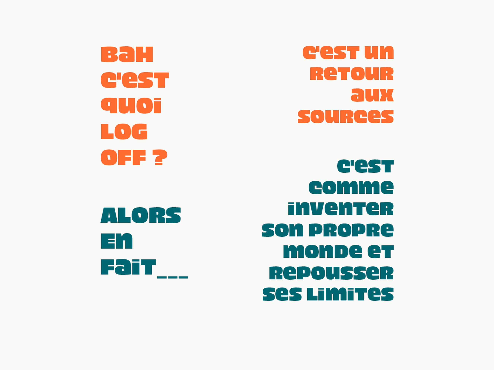

Log off, un mouvement spontané.
De nos jours les jeunes utilisent beaucoup le numérique, c'est pourquoi nous avons crée une campagne de sensibilisation pour convaincre la communauté lycéenne et étudiante de l'ELMAD Renoir de participer au mouvement Log off. L'objectif est de les faire réfléchir sur cette relation avec le numérique sans pour autant prôner l'abandon des réseaux.
Le projet à été réalisé en risographie.
